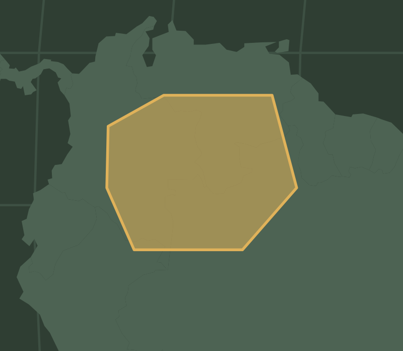

Planta · Miristicáceas · Alto Orinoco y Río Negro
Epená
Virola spp.
Un rapé que pueblos del alto Orinoco y del Río Negro, como los waika o yanomami, preparan con la resina rojiza de la corteza de árboles del género Virola. Su identificación botánica y química es una historia de campo de varias décadas.1235
También se llamaepená · epena · nyakwana · yakee · yato · parica (en parte) · Virola theiodora · Virola elongata · Virola calophylla
- Qué es
- Rapé de la resina de árboles de la familia de la nuez moscada
- Territorio
- Alto Orinoco, Río Negro y zonas vecinas de Venezuela, Brasil y Colombia
- Parte usada
- La resina rojiza de la corteza interior
- Principios activos
- Triptaminas, entre ellas DMT y 5-MeO-DMT
- Empieza y dura
- Sin datos fiables en las fuentes consultadas
- Quién guarda su memoria
- Waika o yanomami, puinave y otros pueblos amazónicos
Botánica
Árboles de la familia de la nuez moscada
El epená se obtiene de varias especies del género Virola, árboles de la familia de las miristicáceas.3 Entre ellas figuran V. theiodora, V. elongata, V. calophylla y V. calophylloidea.4
La especie más importante parece ser V. theiodora.2 Un estudio etnotoxicológico detallado de 1968 mostró que los grupos waika de los afluentes norteños del Río Negro, en Brasil, emplean esa especie, aparentemente con exclusión de otras.5
Además de Virola, en la región se emplean como componentes de rapé otras plantas como Elizabetha princeps y Justicia pectoralis var. stenophylla.4
- Familia
- Myristicaceae
- Especie principal
- Virola theiodora
- Parte usada
- Resina de la corteza interior
- Otras plantas del rapé
- Elizabetha princeps, Justicia pectoralis
Memoria y tradición
El rapé de los waika
En Venezuela hay pueblos que preparan un rapé alucinógeno muy potente a partir de una de varias especies de Virola; se llama epena, nyakwana, yakee o yato.2
Los indígenas del alto Río Negro usan las hojas secas de V. theiodora y de V. cuspidata para hacer un polvo de rapé que llaman parica.1
Las declaraciones de Ducke parecen la primera identificación de este narcótico con Virola.1 Cuando se hablaba de un rapé en Sudamérica, los antropólogos tendían a suponer automáticamente que era de otra planta.1
El misionero James Barker ofreció en 1953 una discusión muy detallada de los rapés del Orinoco, trabajando sobre todo con los waika cerca de la misión de El Platanal.1
En el Amazonas colombiano y el Perú vecino, otros pueblos no usan Virola como rapé, sino que ingieren píldoras preparadas con la resina rojiza de la corteza interior.2
Según Seitz y Holmstedt y Lindgren, entre los waika el rapé de Virola se administra a comienzos de la tarde, raramente por la noche y nunca por la mañana.6
Brewer-Carías y Steyermark documentaron en 1976 los rapés alucinógenos de los yanomami caburiwe-teri del río Cauaburi, en Brasil.4
En el tiempo
James Barker describe los rapés del Orinoco con los waika.1
Schultes y Holmstedt publican el estudio etnotoxicológico detallado.5
Brewer-Carías y Steyermark documentan los rapés de los yanomami del río Cauaburi.4
Sus nombres
- epená
- nombre general del rapé
- nyakwana
- nombre del rapé de los waika
- yakee, yato
- otros nombres regionales
- parica
- término usado para otros rapés del Río Negro
Waika, yanomami o yanomamö son nombres de pueblos cercanos que las fuentes usan de forma distinta.4
Territorio y cuidado
El Orinoco y el Río Negro

Qué ayuda
- Conocerlo como parte de una tradición viva de los pueblos amazónicos.
- No presentarlo como un producto.
- Respetar el territorio y las normas de cada pueblo.
Qué contiene
Triptaminas de la resina
La resina de Virola theiodora es rica en triptaminas; el rapé nyakwana de los waika contiene 5-MeO-DMT y DMT, además de trazas de otras triptaminas.5
El rapé de Virola comparte la actividad psicoactiva de rapés de otra procedencia, como los de Anadenanthera.57
Principal triptamina del rapé de Virola theiodora.[5]
Presente junto a la anterior.[5]
La experiencia
Un rapé de uso ritual
Las fuentes lo describen como un rapé alucinógeno muy potente.2
No ofrecen datos fiables de aparición ni de duración.
Esquema orientativo: cambia con la preparación, la cantidad y la persona.
Investigación
Qué se ha estudiado
Hay trabajos de campo y de laboratorio de Schultes y otros investigadores sobre la botánica y la química del rapé.25
Una revisión multidisciplinar de los rapés sudamericanos recoge la etnobotánica, la fitoquímica y la farmacología de los rapés de Virola, Anadenanthera y otros.7
Alcance de estos datosHay buena documentación etnobotánica y química y poca investigación clínica.
Con cuidado
Lo que conviene saber antes
Para seguir
Libros y medicinas emparentadas
Otra planta de la que se hace un rapé con triptaminas.
Pariente botánica de la misma familia.
Fuentes
De dónde sale cada dato
- Schultes RE. Narcotic use of the genus Virola (capítulo). bibliography.maps.org/resources/download/15074.
- Schultes RE. Resumen del uso de Virola y otros rapés americanos. bibliography.maps.org/resources/download/15073.
- Schultes RE, Holmstedt B. Estudio de los rapés de miristicáceas de los waika. Rhodora. 1968;70. archive.org/download/biostor-180813/biostor-180813.pdf.
- Brewer-Carías C, Steyermark JA. Hallucinogenic snuff drugs of the Yanomamo Caburiwe-Teri in the Cauaburi River, Brazil. Economic Botany. 1976. bibliography.maps.org/resources/download/12875.
- Schultes RE. Estudio de las miristicáceas usadas como rapé (resina rica en triptaminas). archive.org/download/biostor-160705/biostor-160705.pdf.
- Erowid. Ayahuasca: alkaloids, plants y analogs, sección 3, parte 2 (Anadenanthera), con cita de Seitz y de Holmstedt y Lindgren. erowid.org/books_online/ayahuasca_apa/aya_sec3_part2_anadenanthera.shtml.
- De Smet PAGM, Rivier L. Multidisciplinary overview of Piaroa and related snuffs. J Psychoactive Drugs. bibliography.maps.org/resources/download/12242.
- Mapa APDER, con datos de Natural Earth · dominio público
- Dibujos de moléculas APDER
Última revisión: 24 de noviembre de 2026. Si ves un error, escríbenos a info@apder.org.